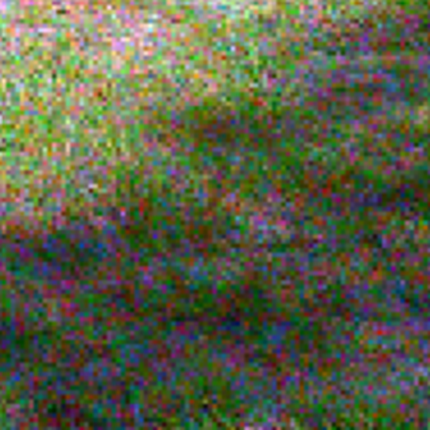

Module 2 · Nettoyer : sur les vraies photos

Des milliers de photos propres + notre faux bruit.
de TouNum, jamais vues à l’entraînement
0 / 50
photos améliorées
Le même réseau continue d’apprendre, sur un mélange :
78 vraies paires bruitée / originale
+ des photos propres, à ne pas toucher
+ du faux bruit, pour ne pas oublier
sur les mêmes 50 photos
49 / 50
photos améliorées
Pourquoi l’échec au test ② ? Le vrai bruit est très léger et un peu différent du nôtre : en voulant corriger, le réseau abîmait plus qu’il ne réparait.
« Améliorée » : plus proche de son original après nettoyage qu’avant. Les 50 photos de test n’ont jamais servi à l’entraînement.
Leyenda · Nettoyer · Sur les vraies photos
10 / 15